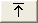

이 창에서 이벤트 목록에 표시할 경보 컬럼의 선택사항을 정의하고 이 컬럼의 순서 및 포맷팅을 정의하십시오. 보기 빌더를 사용하여 이벤트 데이터에서 이 정보 보기를 설정하고 유지보수할 수 있습니다.
보기 설정 영역
이 영역을 사용하여 이름을 정의하고 보기에 대한 권한을 설정하십시오.
다음과 같이 이 영역을 완료하십시오.
- 이름
- 보기를 새로 작성할 경우 현재 이름을 보기의 고유 이름으로 겹쳐쓰기합니다. 이 이름은 이벤트 목록에 사용됩니다. 기존 보기를 편집할 경우 이 필드에 항목을 작성할 필요가 없습니다.
- 편집 가능
- 해당 관리자 권한이 있는 경우 기타 사용자가 이 보기를 편집하도록 허용하려면
이 선택란을 체크하고 보기가 수정되지 못하게 하려면 이 선택란을 체크하지 마십시오.
제한사항: 이 설정은 보기가 이벤트 목록 구성(.elc 파일)의 일부로 저장된 경우에만 적용됩니다.
컬럼 표시 영역
이 영역을 사용하여 이벤트 목록에 표시하려는 alerts.status 컬럼을 선택하고 컬럼의 순서 및 형식을 지정하십시오.
다음과 같이 이 영역을 완료하십시오.
- 사용 가능한 필드
- 이 목록은 이벤트 목록에 더 추가될 수 있는 컬럼을 모두 표시합니다. 이 목록의 컬럼 이름은 알파벳순으로 표시됩니다. 사용 가능한 필드 목록은 이벤트 목록 보기 목록과 연계하여 작동하고 이벤트 목록에 추가하기 위해 선택한 컬럼을 보유합니다.
- 다음 테이블에 설명된 단추를 사용하여 두 목록 간에 컬럼을 이동하십시오.
표 1. 컬럼 선택사항 단추 단추 설명 
왼쪽의 사용 가능 필드 목록에서 선택한 컬럼을 오른쪽의 목록으로 이동하려면 이 단추를 클릭하십시오. 
왼쪽의 사용 가능 필드 목록에서 오른쪽의 목록으로 컬럼을 모두 이동하려면 이 단추를 클릭하십시오. 
오른쪽의 목록에서 선택한 컬럼을 왼쪽의 사용 가능 필드 목록으로 이동하려면 이 단추를 클릭하십시오. 
오른쪽의 목록에서 왼쪽의 사용 가능 필드 목록으로 컬럼을 모두 이동하려면 이 단추를 클릭하십시오. - 이벤트 목록 보기
- 이 목록은 이벤트 목록 보기에 표시하기 위해 선택되는 모든 컬럼과 해당 컬럼이 표시되는 순서를 표시합니다.
- 다음 테이블에 설명된 단추를 사용하여 컬럼의 순서를 변경할 수 있습니다.
표 2. 컬럼 순서 단추 단추 설명 선택한 컬럼을 목록의 맨 위로 이동시켜 해당 컬럼을 이벤트 목록에 표시된 첫 번째 컬럼이 되게 하려면 이 단추를 클릭하십시오. 선택한 컬럼을 목록에서 한 위치 위로 이동하거나 이벤트 목록에서 왼쪽으로 한 위치 이동하려면 이 단추를 클릭하십시오. 
선택한 컬럼을 목록에서 한 위치 아래로 이동하거나 이벤트 목록에서 오른쪽으로 한 위치 이동하려면 이 단추를 클릭하십시오. 
선택한 컬럼을 목록의 맨 아래로 이동시켜 해당 컬럼을 이벤트 목록에 표시된 마지막 컬럼이 되게 하려면 이 단추를 클릭하십시오. - 필드 이름/정렬
- 이벤트 목록 보기 목록에서 컬럼을 선택하면 시스템 정의된 컬럼 이름이 필드 이름 필드에 읽기 전용 값으로 표시됩니다. 인접 정렬 목록에서 왼쪽, 가운데 또는 오른쪽을 선택하여 이벤트 목록의 컬럼 데이터 맞추기를 설정하십시오.
- 컬럼 제목/정렬
- 이벤트 목록 보기 목록에서 선택한 컬럼이 시스템 정의된 이름 이외의 다른 제목으로 표시되게 하려면 컬럼 제목 필드에 이 제목을 입력하십시오. 인접 정렬 목록에서 왼쪽, 가운데 또는 오른쪽을 선택하여 이벤트 목록의 컬럼 제목 맞추기를 설정하십시오.
- 컬럼 너비
- 이벤트 목록에서 컬럼의 너비를 지정하십시오.
컬럼 정렬 영역
이 영역을 사용하여 이벤트 목록에서 행의 순서 및 우선순위를 구성하십시오. 데이터가 정렬될 수 있는 컬럼을 0개 이상 지정하고 컬럼의 정렬 우선순위를 정의할 수 잇습니다.
다음과 같이 이 영역을 완료하십시오.
- 사용 가능 정렬 필드
- 이 목록은 이벤트 데이터를 정렬할 수 있는 사용 가능 컬럼을 모두 표시합니다. 이 목록의 컬럼 이름은 알파벳순으로 표시됩니다. 사용 가능 정렬 필드 목록은 정렬 기준 목록과 연계하여 사용됩니다.
- 앞의 컬럼 선택사항 단추 테이블에 설명되어 있는 단추를 사용하여 두 목록 간에 컬럼을 이동하십시오.
- 정렬 기준
- 이 목록은 이벤트 데이터 정렬을 위한 컬럼을 표시합니다. 이 목록을 사용하여
이벤트 데이터의 정렬 정의를 다음과 같이 지정하십시오.
- 각 컬럼의 정렬 순서를 정의하십시오. 목록의 각 컬럼 이름 왼쪽으로 화살표가 표시됩니다. 기본적으로 이 화살표는 위쪽을 향하고 컬럼이 영문자 오름차순으로 정렬됨을 표시합니다. 내림차순으로 변경하려면 화살표를 두 번 클릭하십시오. 정렬 방향을 변경하기 위해 선택한 컬럼 이름에서 마우스 오른쪽 단추를 클릭한 다음 팝업 메뉴에서 변경을 선택할 수도 있습니다.
- 모든 컬럼의 정렬 우선순위를 정의하십시오. 정렬 목록의 맨 위에 있는
필드는 정렬 시 최고 우선순위를 갖습니다.
목록에 두 번째 필드를 추가하고 다수 항목의 첫 번째 필드가 동일한 경우
두 번째 필드가 해당 항목을 정렬하는 데 사용됩니다.
컬럼의 정렬 우선순위를 높이거나 낮추려면 컬럼 이름을 선택한 후 다음 테이블에서
설명한 대로 화살표 단추를 사용하십시오.
표 3. 컬럼 정렬 순서 단추 단추 설명 선택한 컬럼을 목록의 맨 위로 이동하려면 이 단추를 클릭하십시오. 선택한 컬럼을 목록의 한 위치 위로 이동하려면 이 단추를 클릭하십시오. 선택한 컬럼을 목록의 한 위치 아래로 이동하려면 이 단추를 클릭하십시오. 선택한 컬럼을 목록의 맨 아래로 이동하려면 이 단추를 클릭하십시오.
행 제한 영역
성능을 향상시키기 위해 ObjectServer에서 읽는 행 수를 제한할 수 있습니다. 이 영역을 사용하여 이벤트 목록에 표시되는 행 수를 제한하십시오.
다음과 같이 이 영역을 완료하십시오.
- 행 제한[1-100]
- 이벤트 목록에 표시되는 행 수를 1에서 100 사이로 제한하려면 이 선택란을 선택하십시오. 최소, 최대
및 기본값 필드가 사용 가능합니다. 참고: 행 제한[1-100] 선택란을 체크하고 구성을 .elv 파일로 저장하면 .elv 파일은 Netcool/OMNIbus V3.6과 호환되지 않습니다.
- 최소값
- 표시할 최소 행 수를 입력하거나 화살표를 사용하여 값을 늘리거나 줄이십시오.
- 최대값
- 표시할 최대 행 수를 입력하거나 화살표를 사용하여 값을 늘리거나 줄이십시오.
- 기본값
- 표시할 기본 행 수를 입력하거나 화살표를 사용하여 값을 늘리거나 줄이십시오.
- 이벤트 목록에서 설정
- 이벤트 목록 사용자가 이벤트 목록 보기에 표시할 이벤트 수를 선택할 수 있게 하려면 이 선택란을 선택하십시오. 이 선택란을 체크하는 경우 사용자가 이벤트 목록 제어를 사용해서 선택하여 볼 수 있는 이벤트 수가 보기 빌더에 지정된 최소 및 최대 값에 의해 제한됩니다. 이 선택란을 지우는 경우 표시되는 이벤트 수는 항상 지정된 기본값이 됩니다.
보기 적용 및 저장
보기를 정의 또는 수정한 후 해당 단추를 클릭해 작성된 변경사항을 다음과 같이
적용, 저장 또는 취소할 수 있습니다.
- 적용
- 변경사항을 저장하지 않고 보기에 적용하려면 이 단추를 클릭하십시오.
- 닫기
- 창을 닫고 변경사항을 버리려면 이 단추를 클릭하십시오.
보기는 .elv 파일 확장자로 저장해야 합니다. 또는 을 클릭하십시오.